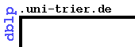

 |
maintained by Michael Ley - Welcome - FAQ
DBLP is available from several hosts: Trier I - Trier II - ACM SIGMOD - VLDB - SunSITE CE
|
|
|
1 200 000DBLP now lists more than 1.2 million publications. |
XMLYou may download DBLP XML records from http://dblp.uni-trier.de/xml/ - a simple DTD is available. |
We appreciate all e-mails by users, we hope that no serious mails become victims of our rigid spam filters. We try to correct all errors we are pointed to as fast as possible. Unfortunately it is far beyond our resources to include all publications we are asked to consider. Sorry, I'm not able to answer all e-mails ...